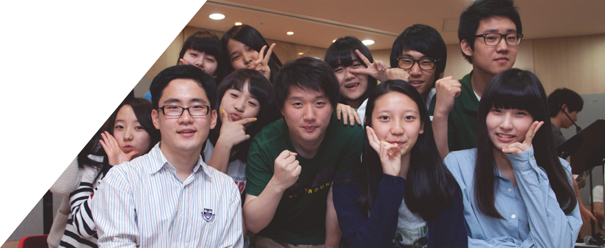
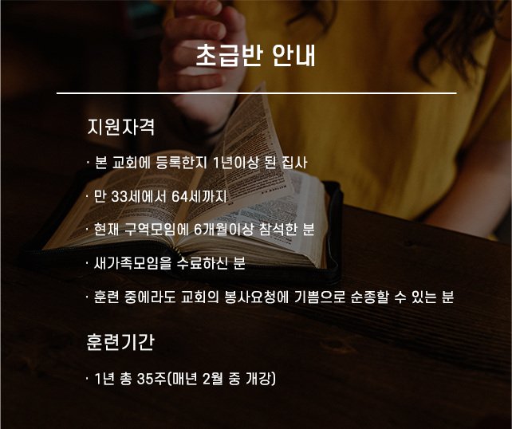
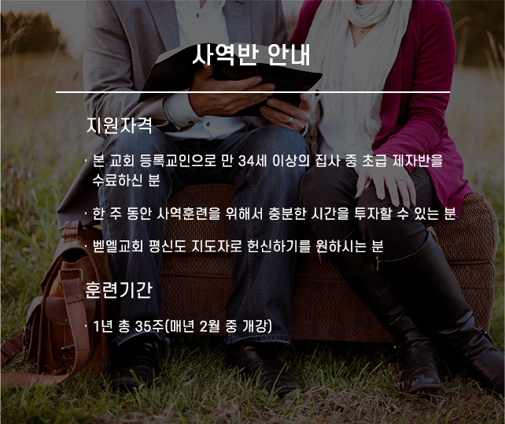
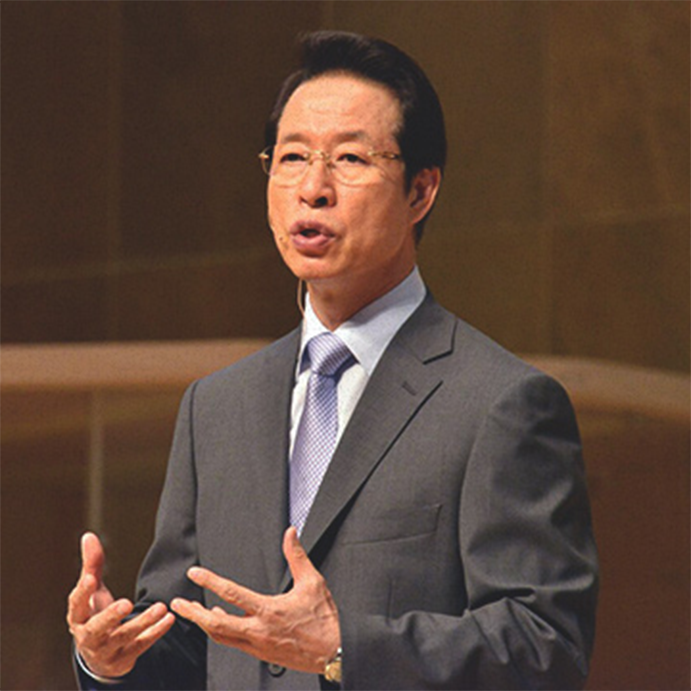
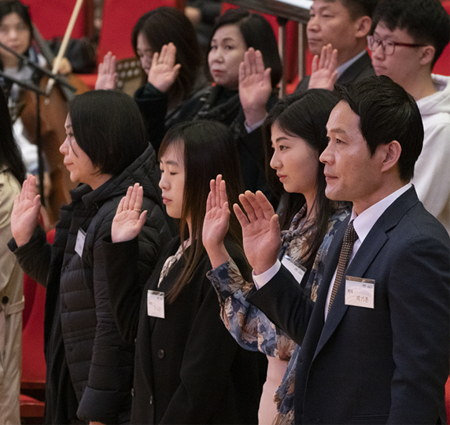
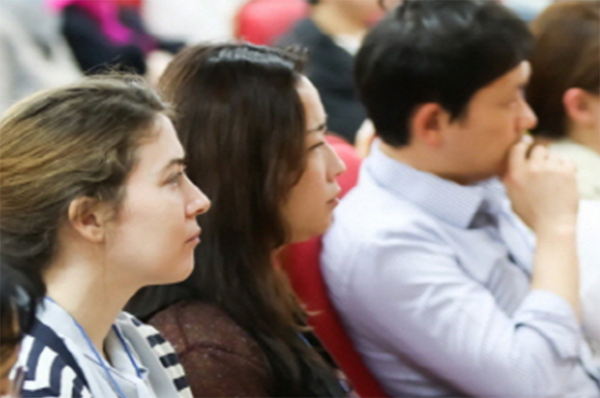

교육/양육
빛과 소금
우리의 자녀들이 성경말씀으로 바르게 자라나 세상에서
빛과 소금으로 살아가기를 바라고 있습니다.
빛과 소금으로 살아가기를 바라고 있습니다.

교회 학교
Church School
제자반 / 사역반
벧엘교회는 소그룹을 통하여 하나님의 말씀으로 그 인격과 삶이
예수 그리스도의 제자로 다듬어진 후 교회의 각 영역에서 주어진
은사에 따라 일할 수 있는 평신도 지도자들을 양육하고 있습니다.
예수 그리스도의 제자로 다듬어진 후 교회의 각 영역에서 주어진
은사에 따라 일할 수 있는 평신도 지도자들을 양육하고 있습니다.


새가족 모임
주님의 이름으로 사랑합니다. 벧엘교회의 성도가 되어 함께 신앙생활을
하게 된 것을 진심으로 축하드립니다.
하게 된 것을 진심으로 축하드립니다.

새가족 모임의 의미
처음에는 모든 것이 생소합니다. 그러나 그리스도 안에서 한 가족의 일원으로
한발 들어오시면 서먹함을 넘어 친밀한 사랑의 관계를 경험할 수 있습니다.
이를 위해 좋은 발판이 되는 새가족 모임에 꼭 참석해 주시기 바랍니다.
은혜의 장으로 나아오십시오.
하나님을 더 알고 싶으십니까? 그리스도의 사랑을 경험하고 싶으십니까? 신앙의
성숙을 위해서 하나님의 은혜 가운데로 들어오십시오. 마음을 하나님께 열기로
결정할 때 하나님은 은혜를 촉촉히 내려주실 것입니다. 새가족모임을 통해
그 은혜 속에서 그리스도의 사랑을 느낄 수 있습니다. 그 사랑 가운데 사는 것을
배울 수 있습니다. 분명 나의 삶이 변화하는 것을 경험하게 됩니다.
특별히 담임목사님의 은혜로운 말씀을 공급받는 귀한 만남의 장이 될 것입니다.


일반양육
General parenting
구역장 훈련
지도 교역자: 박광석
시간: 주일 오후 3시 10분
장소: 3층예배실(i), (u)
총무: 교회
일산(i) 연락처: 915-4500
운정(u) 연락처: 956-3770
새가족모임
지도 교역자: 박광석
시간: 목요일 오전 10시 30분
장소: 3층예배실(i), (u)
총무: 민재원(i)/한정림(u)
일산(i): 010 - 8884 - 1551
운정(u): 010 - 2934 - 9276
상시 전도
지도 교역자: 박동진
시간 1: 화,목 오전 10시
시간 2: 수,토 오후 1시
장소: 3층 예배실(i)
총무: 안영순
일산(i): 010 - 9029 - 5655
부스 전도
지도 교역자: 박병도
시간: 목요일 오전 10시
장소: 4층 교육실 1(i)
총무: 조중희
운정(u): 010 - 4851 - 8640
글없는 책
지도 교역자: 박광석
시간: 주일 오후 3시 10분
장소: 3층예배실(i), (u)
총무: 교회
일산(i) 연락처: 915-4500
운정(u) 연락처: 956-3770
전도폭발
지도 교역자: 박광석
시간: 목요일 오전 10시 30분
장소: 3층예배실(i), (u)
총무: 민재원(i)/한정림(u)
일산(i): 010 - 8884 - 1551
운정(u): 010 - 2934 - 9276
브릿지
지도 교역자: 박동진
시간 1: 화,목 오전 10시
시간 2: 수,토 오후 1시
장소: 3층 예배실(i)
총무: 안영순
일산(i): 010 - 9029 - 5655
4영리
지도 교역자: 박병도
시간: 목요일 오전 10시
장소: 4층 교육실 1(i)
총무: 조중희
운정(u): 010 - 4851 - 8640